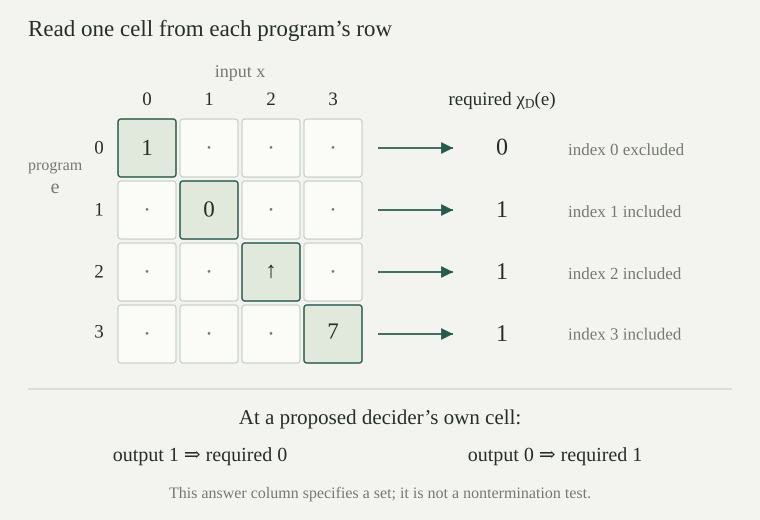

For each natural number \(n\), ask whether \(n\) is even. The inputs with answer yes form a set. More generally, a numerical decision problem is a subset \(A\subseteq\mathbb N\), where \(\mathbb N=\{0,1,2,\ldots\}\). On input \(n\), the required answer is yes if \(n\in A\) and no otherwise. Calling \(A\) a problem specifies the answers, without yet specifying a way of finding them.
The characteristic function of \(A\) records the answers numerically:
Thus \(\chi_A:\mathbb N\to\mathbb N\) is total and has values in \(\{0,1\}\). Throughout this entry, \(1\) means yes and \(0\) means no. A total function has a value at every input. We use ordinary classical reasoning to define this function for every set \(A\); the definition itself does not supply an algorithm.
For subsets \(A,B\subseteq\mathbb N\), we have \(A=B\) if and only if \(\chi_A=\chi_B\). Conversely, every total function \(f:\mathbb N\to\{0,1\}\) is the characteristic function of exactly one set, namely \(\{n:f(n)=1\}\).
If the sets are equal, their membership conditions and hence their characteristic functions agree. If their characteristic functions agree, then \(n\in A\) is equivalent to \(\chi_A(n)=1\), then to \(\chi_B(n)=1\), then to \(n\in B\). This proves equality of the sets. For the converse, put \(A=\{n:f(n)=1\}\). If \(n\in A\), both \(f(n)\) and \(\chi_A(n)\) are \(1\). Otherwise \(f(n)\ne1\), so its only other permitted value is \(0\), again agreeing with \(\chi_A(n)\). The first assertion gives uniqueness.
Different formulas or different programs may therefore describe the same problem. Equality of problems concerns all their answers, rather than the appearance of their descriptions. The general language of sets and maps is useful here, but only membership and equality of functions are needed below.
Let \(A=\{n:\exists k\in\mathbb N\;(n=2k)\}\). Repeatedly subtract \(2\) while the current number is at least \(2\); answer \(1\) if the final number is \(0\), and \(0\) if it is \(1\). This rule terminates on every input and returns \(\chi_A\).
After \(j\) subtractions, if the current remainder is \(r\), the invariant is \(n=2j+r\) with \(r\ge0\). A subtraction preserves this equation and strictly decreases \(r\). There cannot be more than \(n\) strict decreases of a nonnegative integer, so the rule stops. Its final remainder is less than \(2\), hence is \(0\) or \(1\). If it is \(0\), the invariant exhibits \(n=2j\). If it is \(1\), then \(n=2j+1\) cannot equal \(2k\): \(k\le j\) would give \(2k<n\), and \(k\ge j+1\) would give \(2k>n\). These cases exhaust natural numbers \(k\). The returned answer is therefore correct.
The same instructions work for every input, although different inputs require different numbers of steps. Termination for each input does not mean a fixed number of steps works for all inputs; it also makes no claim about efficiency. Later primitive recursion supplies a precise language for procedures built by a prescribed finite number of iterations.
Fix a finite list \(L=(a_0,\ldots,a_{r-1})\) of natural numbers, and let \(A_L=\{a_i:i<r\}\). Compare an input \(n\) with successive entries. Return \(1\) at the first equality; return \(0\) after the last comparison if there was no equality. This rule returns \(\chi_{A_L}(n)\), using at most \(r\) comparisons. Repeated entries are allowed, and the empty list represents the empty set.
After the first \(j\le r\) comparisons, if the scan has not returned \(1\), its invariant is \(n\ne a_i\) for every \(i<j\). A new comparison either exhibits membership or extends this invariant. If all \(r\) comparisons fail, no element of the list equals \(n\), which is exactly \(n\notin A_L\). An early return supplies an index witnessing membership. When \(r=0\), there are no comparisons and every input receives \(0\).
Every finite subset of \(\mathbb N\) has such a list and hence such a rule. The list is fixed before the input is supplied. This differs from a table that records the answers to an arbitrary problem only for inputs below a fixed bound: outside that range, the table says nothing.
For a fixed \(B\in\mathbb N\), can two different problems have the same answers on every input \(n<B\)? Give explicit problems, including when \(B=0\).
Take \(A=\varnothing\) and \(C=\{B\}\). Their characteristic functions are both \(0\) below \(B\), since \(n<B\) implies \(n\ne B\). They disagree at input \(B\): \(\chi_A(B)=0\) and \(\chi_C(B)=1\). This also works for \(B=0\), when the condition below \(B\) has no instances. A finite initial table cannot uniquely specify an arbitrary problem.
A finite binary word is a finite list of symbols \(0,1\). Write \(\varepsilon\) for the empty word and \(b::w\) for the word with first symbol \(b\in\{0,1\}\) followed by \(w\). Its length is \(0\) for \(\varepsilon\) and \(1+|w|\) for \(b::w\). The word \(0::1::\varepsilon\), also written \(01\), has length \(2\).
Define a numerical code by recursion on the word:
This particular convention processes the tail first. It gives \(c(0)=1\), \(c(1)=2\), \(c(00)=3\), \(c(10)=4\), \(c(01)=5\), and \(c(11)=6\). Leading zero symbols are retained: \(0\) and \(00\) are different words with different codes. This is a code for words, rather than their usual binary numerical value.
The function \(c\) is injective: if \(c(u)=c(v)\), then \(u=v\). In particular, all finite binary descriptions fit into the natural numbers without collisions.
Induct on \(u\), with \(v\) arbitrary. The empty word has code \(0\), while every nonempty word has code at least \(1\), so equality with an empty word forces both words to be empty.
For nonempty words write \(u=b::u'\) and \(v=d::v'\). Equality of codes gives \(2c(u')+b+1=2c(v')+d+1\). If \(b\ne d\), one side is odd and the other even, which is impossible: an equation \(2a=2t+1\) is excluded by the order argument used for . Thus \(b=d\). Subtracting the common \(b+1\) and cancelling \(2\) gives \(c(u')=c(v')\). The induction hypothesis yields \(u'=v'\), so the original words agree. This covers every case.
A collection is called at most countable here when it admits an injection into \(\mathbb N\). The explicit map \(c\) proves this for binary words and for any subset of them. For the relation with enumerations and the usual terminology, see countable encodings. The proof above does not assume that general theory.
Compute \(c(101)\). If a nonempty word has code \(n\), how can its first symbol and its tail's code be recovered from \(n\)?
Since \(c(1)=2\), we get \(c(01)=2\cdot2+0+1=5\) and \(c(101)=2\cdot5+1+1=12\). In general \(n-1=2c(w)+b\). Division by \(2\) gives quotient \(c(w)\) and remainder \(b\). Equivalently, an odd code has first symbol \(0\), and a positive even code has first symbol \(1\). The recovered tail code is \(\lfloor(n-1)/2\rfloor\). For \(n=12\), this recovers first symbol \(1\) and tail code \(5\). The empty word is the separate case \(n=0\).
Suppose an alphabet \(\Sigma\) has \(q\) symbols. Choose an integer \(k\ge1\) with \(q\le2^k\), and assign its symbols distinct binary words of length \(k\). Replace each symbol in a word over \(\Sigma\) by its assigned block, concatenate, and apply \(c\). The resulting map from finite words over \(\Sigma\) to \(\mathbb N\) is injective.
There are \(2^k\) binary words of length \(k\): for length zero there is one, and adding a first symbol doubles the number. A suitable \(k\) exists, for example \(k=q+1\), since induction gives \(q\le2^{q+1}\). Thus there are enough distinct blocks for the assignment. Splitting the encoded word into consecutive blocks of length \(k\) recovers each original symbol uniquely. If two concatenations agree, their lengths agree, their corresponding blocks agree, and the original symbol lists agree. Finally, injectivity of \(c\) preserves this property. The empty alphabet causes no problem: its only word is empty.
A program syntax may admit only some words as valid descriptions. Restricting an injection to those words remains injective. This establishes a numbering of program texts, without asserting that validity can be tested or that a program can be run from its code.
Fix a numbered family of possible program behaviors. For each pair \(e,x\in\mathbb N\), write \(E(e,x)\downarrow=y\) when program number \(e\), on input \(x\), has numerical output \(y\). Require that there is at most one such \(y\). If no output exists, write \(E(e,x)\uparrow\). This is a family of partial functions: an input may have no value. Undefined is different from output \(0\).
A genuine programming language with finite binary descriptions supplies such a family by using their codes for \(e\). Assign no output to unused or invalid codes. Different descriptions may have exactly the same behavior; the numbering is injective on texts, not necessarily on resulting functions. This convention also permits a language with no valid programs.
For the theorem below, \(E\) is an arbitrary fixed family with unique outputs. We do not require that its behavior be computable by one evaluator. In a computation model, undefined behavior can represent a run that never halts. The abstract partial-function description records only outputs, without recording running times or intermediate states. A fuller treatment of partial functions later develops rules for constructing them.
The Turing-machine interpretation gives such behavior by following a run and reading the tape only when it halts.
A number \(e\) decides \(A\subseteq\mathbb N\) relative to the fixed family \(E\) when
The problem is decidable relative to \(E\) if some \(e\) decides it. Thus a decider is total, always outputs \(0\) or \(1\), and gives the correct membership answer. A program that returns correct positive answers but sometimes runs forever does not meet this definition. Neither does a total program with an incorrect answer at even one input.
The parity and finite-list rules above give explicit terminating procedures. To identify them with indices in a particular family \(E\), one must show that the chosen programming model can express those procedures. An arbitrary family need not contain them. Later decidability in the partial-recursive model chooses a specific family with explicit closure and coding properties. No such expressiveness assumption is used here.
Let \(A\subseteq\mathbb N\). In each case, could \(e\) decide \(A\)? (i) It outputs \(1\) exactly on members of \(A\), and is undefined on every nonmember. (ii) It is total and outputs \(1\) exactly on members, but returns \(2\) on nonmembers. (iii) It outputs \(\chi_A(x)\) after \(x+1\) steps on input \(x\).
In (i) it decides \(A\) exactly when \(A=\mathbb N\): any nonmember lacks the required output \(0\), while if there are no nonmembers it always returns \(1=\chi_A(x)\). In (ii) the same condition is necessary and sufficient, because \(2\ne0\). In (iii) it decides \(A\), since each input has a finite waiting time and the correct output. There is no bound on running time in the definition. In particular, a bound independent of \(x\) is unnecessary.
For the fixed family \(E\), define the diagonal problem
Thus \(e\in D_E\) when program \(e\) on input \(e\) either has no output or has an output different from \(1\). If it returns \(1\), then \(e\notin D_E\). For example, an output \(0\) puts \(e\) in \(D_E\), and so does an output \(2\). In both cases the answer required by \(D_E\) is \(1\), irrespective of the program's own output.
This is a classical definition of a set, not an instruction to wait for a computation and then recognize that it will never finish. It uses a mathematical negation of the output assertion. The definition of \(\chi_{D_E}\) consequently supplies an answer function but does not supply a program producing it.
For every family \(E\) of partial numerical functions indexed by \(\mathbb N\), no index \(e\) decides \(D_E\). In particular, some numerical decision problem is not decidable relative to \(E\).
Fix an index \(e\) and suppose it decides \(D_E\). Its value at \(e\) must then exist and equal \(\chi_{D_E}(e)\), so it must be \(0\) or \(1\).
If it is \(1\), the defining condition of \(D_E\) is false, so \(e\notin D_E\) and \(\chi_{D_E}(e)=0\). The proposed decider gives the wrong answer. If it is \(0\), uniqueness of outputs implies that it does not also output \(1\). Hence \(e\in D_E\), so \(\chi_{D_E}(e)=1\), again contradicting its answer. These cases exhaust the possible output of a decider, so there is no such \(e\).
The same family supplies the programs and the behavior tested on the diagonal. A different family may decide this particular set; its own diagonal set still escapes it. The theorem therefore states an obstruction for each fixed family, rather than one fixed problem that defeats every imaginable interpretation of instructions.
Suppose \(E(0,0)\downarrow=1\), \(E(1,1)\downarrow=0\), \(E(2,2)\uparrow\), and \(E(3,3)\downarrow=7\). Determine \(D_E\cap\{0,1,2,3\}\) and its characteristic values at these four inputs. Does knowing these four cases decide \(D_E\)?
The intersection is \(\{1,2,3\}\), and the four characteristic values are \(0,1,1,1\). Index \(0\) returns \(1\), which excludes it; the others do not return \(1\), which includes them. The assertion about index \(2\) is given as mathematical information, not inferred from a finite wait. Four known answers do not provide a procedure for all remaining inputs. Moreover, rules out any decider for \(D_E\) within this family, regardless of how many particular instances have been settled.
